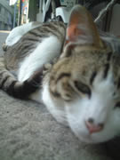

|
■2004/05/11/(Tue)22:49
かえってきているのですよ
|

夏のにおいがしますね。
今日は窓を開けて夜を楽しんでおります。
隣が夫婦喧嘩しているのが良く聞こえてヨシ。
明日からは大阪出張。はじめて関空に行ってきまーす。
今年は大阪より、九州に行くことが多くなりそうな感じ。
福岡空港はアクセスがいいから好きなんだよなぁ…。
ＧＷの旅行記はちまちま作っておりますのでお待ちください。
冬の間もちょこちょこ旅行してたのですが、冬は病気だなんだで、記憶がなし。
恐ろしいほどスコーンと記憶が飛んでるんだよね。
システムエラー連続でブルースクリーンが続いていたようなそんなよーな感じ。
まー気候もよくなり調子も戻ってきたので、これからまた年末までがんばりまひょか。
と、来月はこのサイトの１周年です。
|
| |